Weavingspace: a new way to make multivariate maps
Geospatial Stuff
University of Auckland
Mapping multivariate data
A hard problem
Many methods have been tried


 4–6.")
Enter weavingspace
In brief
An approach based on tiling
Elements in a tiling ‘pick up’ data from area units by overlay so we can combine multiple choropleths into a single map
Giving two kinds of map of complex multivariate data (tiled and woven)
weavingspace
A python module developed for making tiled maps
github.com/DOSull/weaving-space
> pip install weavingspace
Uses geopandas and a lot of geometry, leveraging shapely
Implements well over a hundred tilings and weave tiling patterns
import geopandas as gpd
1from weavingspace import TileUnit
2from weavingspace import Tiling
tile = TileUnit(tiling_type = "cairo", spacing = 500,
crs = ak.crs).inset_prototile(10)
tile.plot(r = 1, show_vectors = True)- 1
-
A
TileUnitstores geometry of a tiling and translation vectors so we can tile a map. - 2
-
A
Tilingis the result of applying aTileUnitto a geospatial dataset.
The tiling process


1tiling = Tiling(tile, ak)
tiled_map = tiling.get_tiled_map(prioritise_tiles = True)
2tiled_map.legend = False
tiled_map.ids_to_map = list("abcd")
tiled_map.vars_to_map = ["income", "employment", "crime", "housing"]
tiled_map.colors_to_use = ["Reds", "Blues", "Greens", "Greys"]
3fig = tiled_map.render()- 1
- Make the tiling and get a map.
- 2
- Set up a bunch of parameters for the final map.
- 3
- Render.
Many options
Biaxial weaves
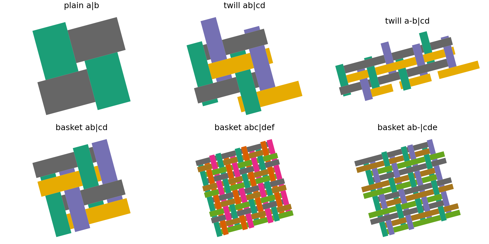Triaxial weaves
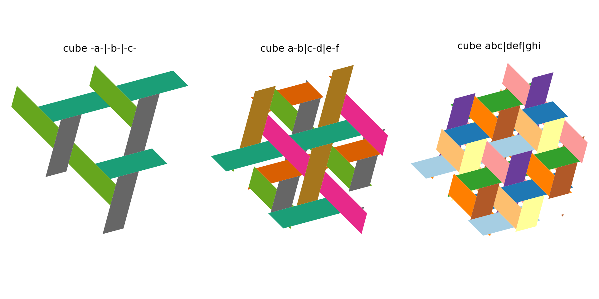Archimedean tilings
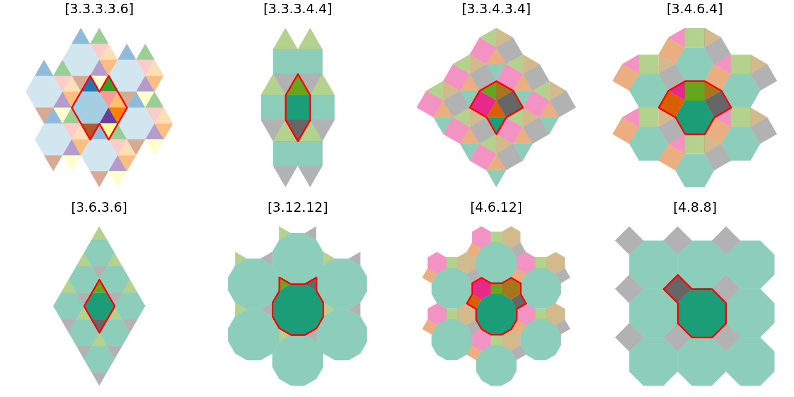Laves tilings
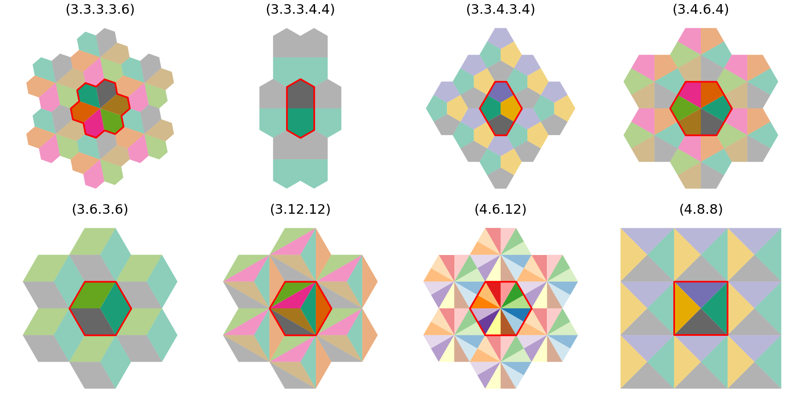Square colourings
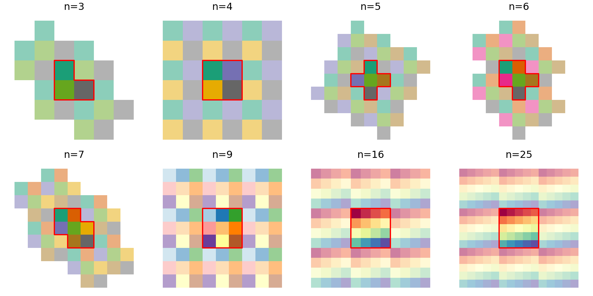Hexagon colourings

Square slices
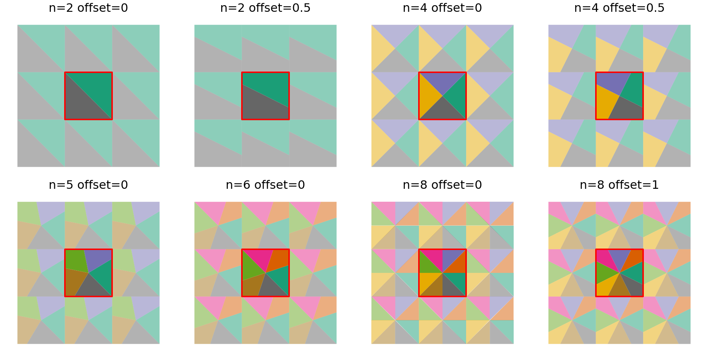Hexagon slices
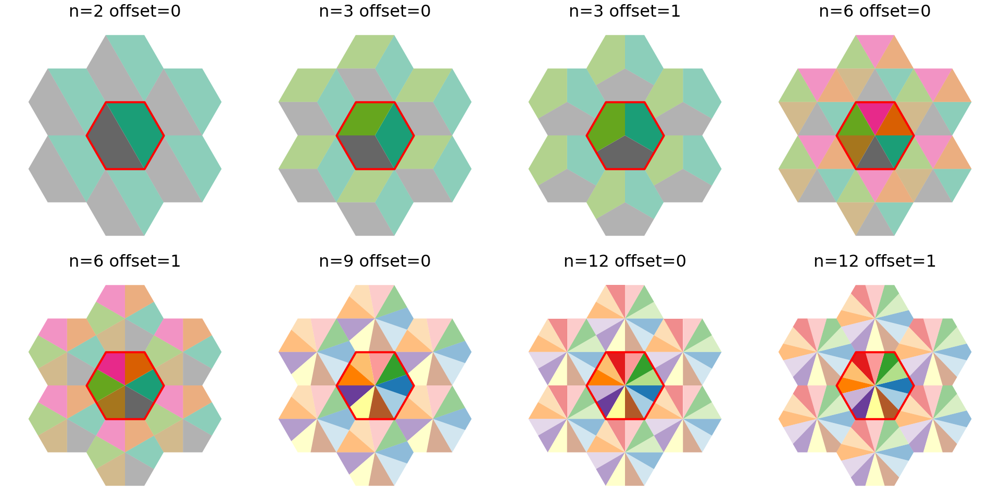Square and hexagon dissections
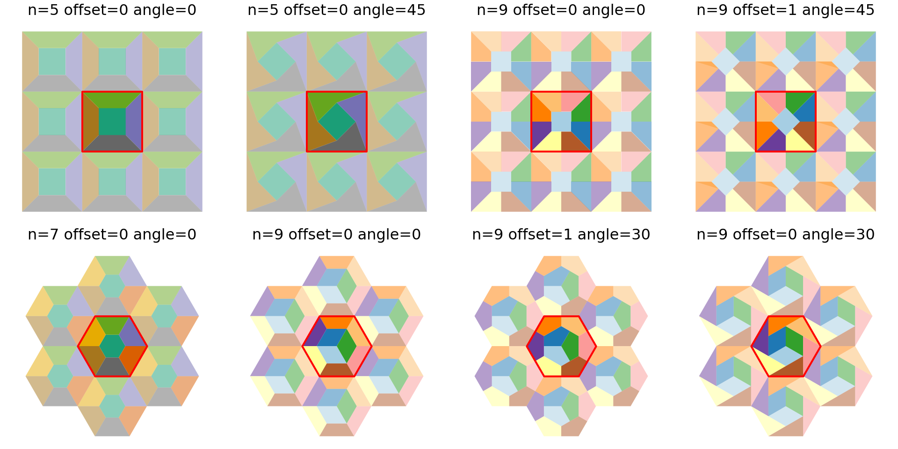Crosses
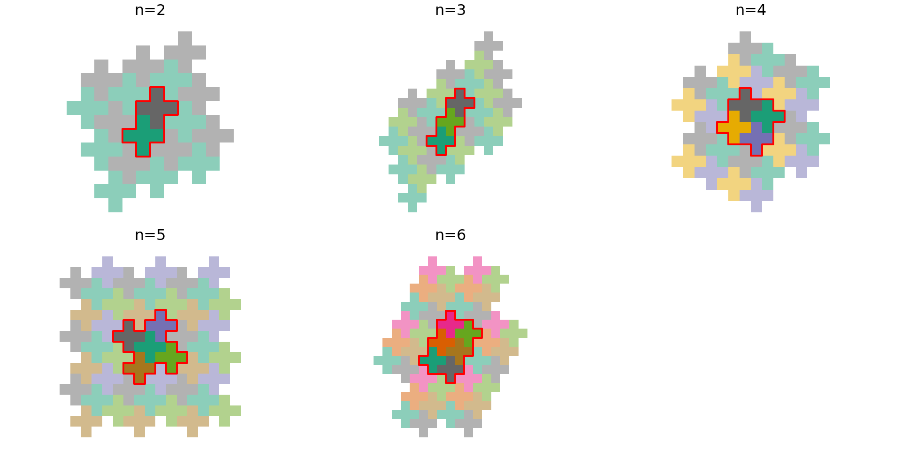Stars (and polygons)
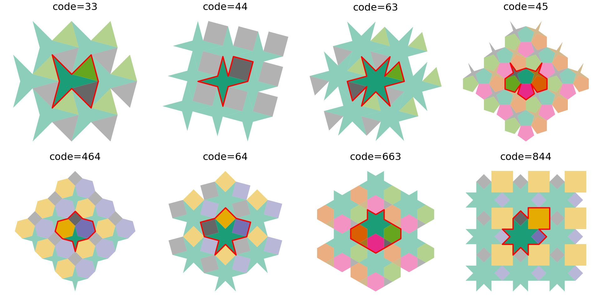Stripes
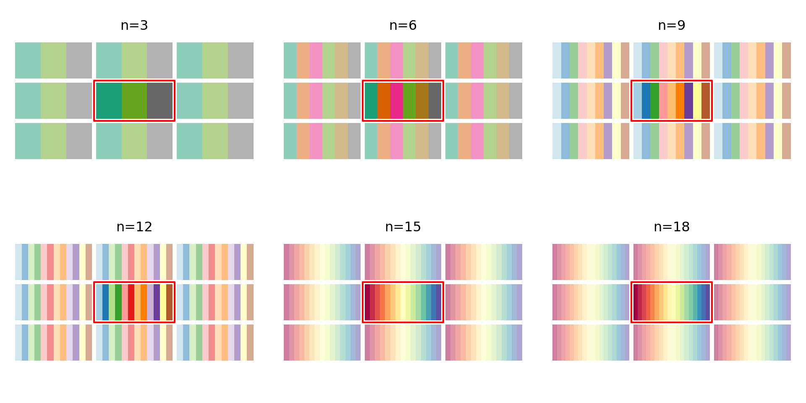Larger n tilings
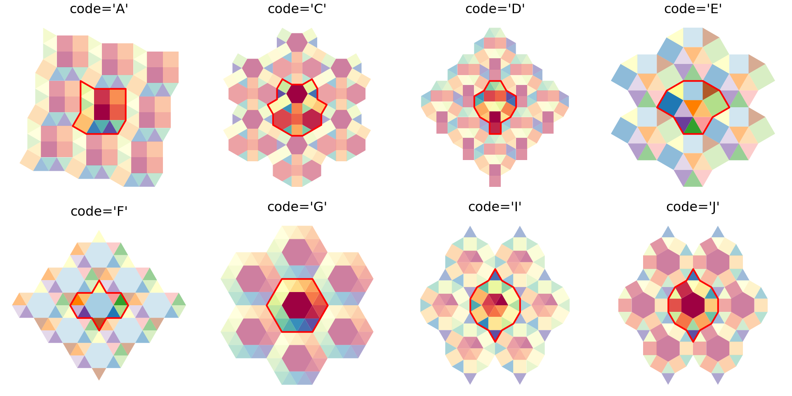Modifying tiles (experimental)
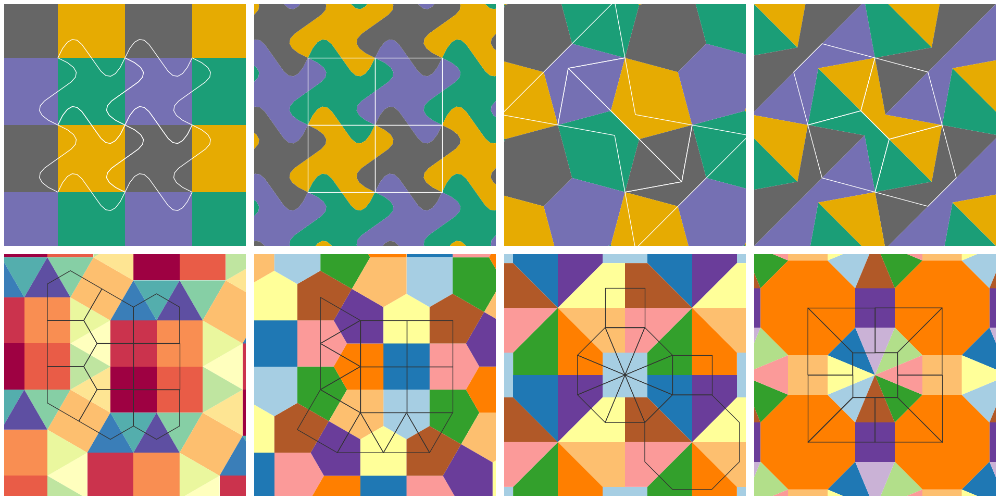A web app
Make tiled and woven maps without code!
Live demo time!
Some examples
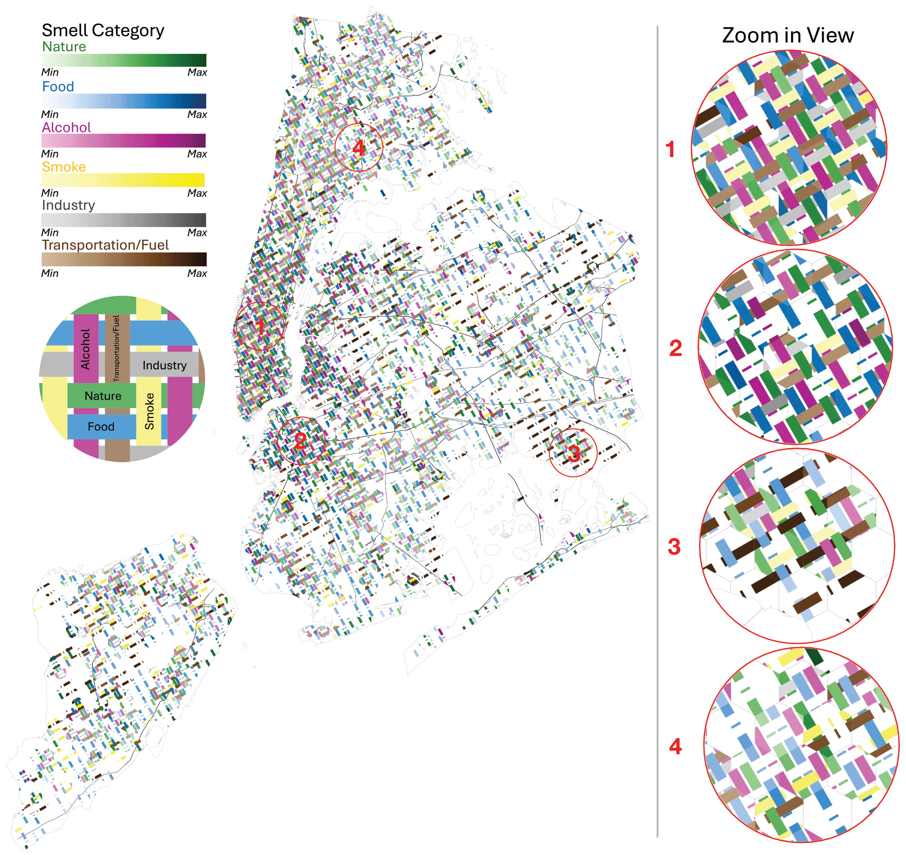
Chen Q, A Poorthuis, and A Crooks. 2025 (online first, April). Mapping the Invisible: Decoding Perceived Urban Smells Through Geosocial Media in New York City. Annals of the American Association of Geographers.

Allen J. 2025. Mapping mode share in Toronto via weaving space. At schoolofcities.github.io.
Questions?
FOSS4G Oceania 2025